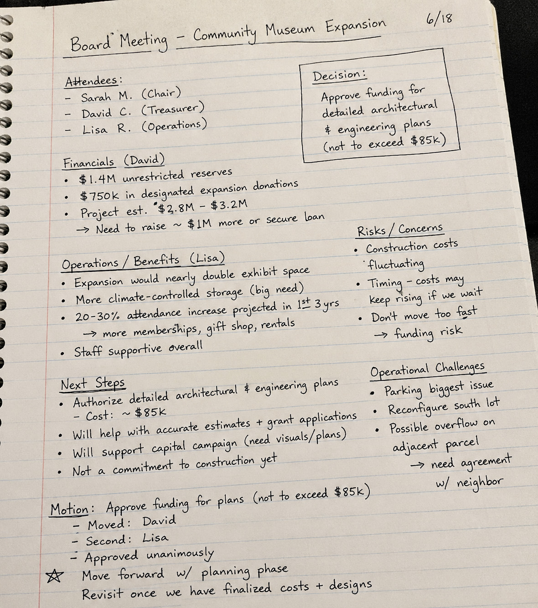

Saved product walkthrough
Run a meeting note through N3XRA Records.
This demo uses your sample audio and handwritten notes, then replays a saved Records workflow every time: transcript, OCR-style extraction, editable document, PDF preview, sharing, AI answers, and keyword search.
Follow the guided tour. Each step highlights what to click.
Meeting note
Community Museum Expansion
A new meeting note starts with basic metadata, sample audio, and the recording workflow.
Library
Community Museum Board
Type
Board meeting
Status
Draft
Sample audio
Transcript
Handwritten notes
Scan and extract supporting notes
The image is the real sample note asset. The extracted text is saved demo output that can be replaced after you run the real process.

CommunityMuseumxpansionProjectnotes.jpg
Extracted notes
AI review
Compare notes with transcript
This mirrors the real review result from the sample: suggested additions were applied and no conflicts were found.
Run the review to see suggested additions and possible conflicts.
Editable document
Generated minutes document
This mirrors the editable document step. You can change the text locally during the demo before generating the PDF preview.
No editable document saved yet.
PDF and sharing
Generate a shareable PDF preview
The real product generates PDFs server-side. This demo renders a fixed preview from the saved document.
Records AI
Ask fixed demo questions
The answers are saved examples based on the sample transcript, notes image, and generated minutes.
Keyword search
Search across the demo library
Search the transcript, scanned notes, generated document, and public record metadata.
Public records
Publish selected records to the public view
Only records marked public appear here. The internal transcript, draft notes, and private files stay behind login.
Public records
Community Museum Board
No public demo record has been published yet.